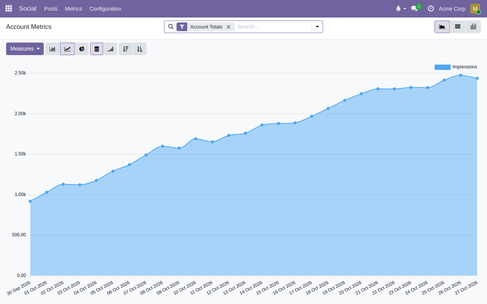
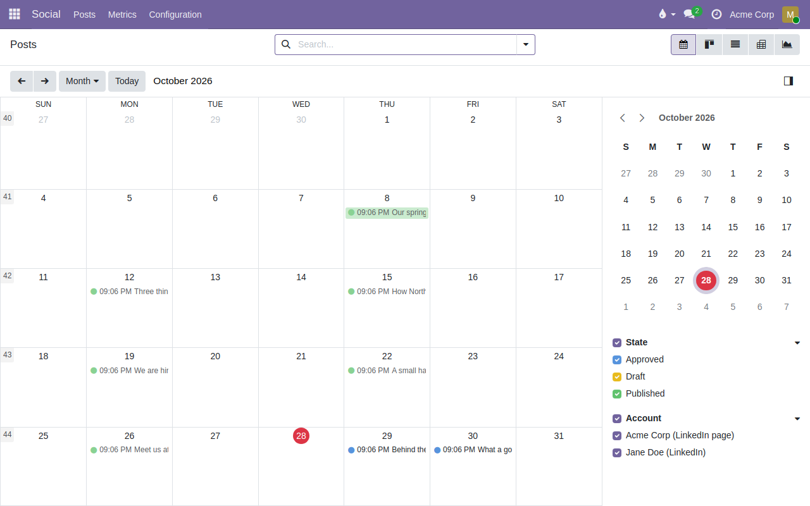
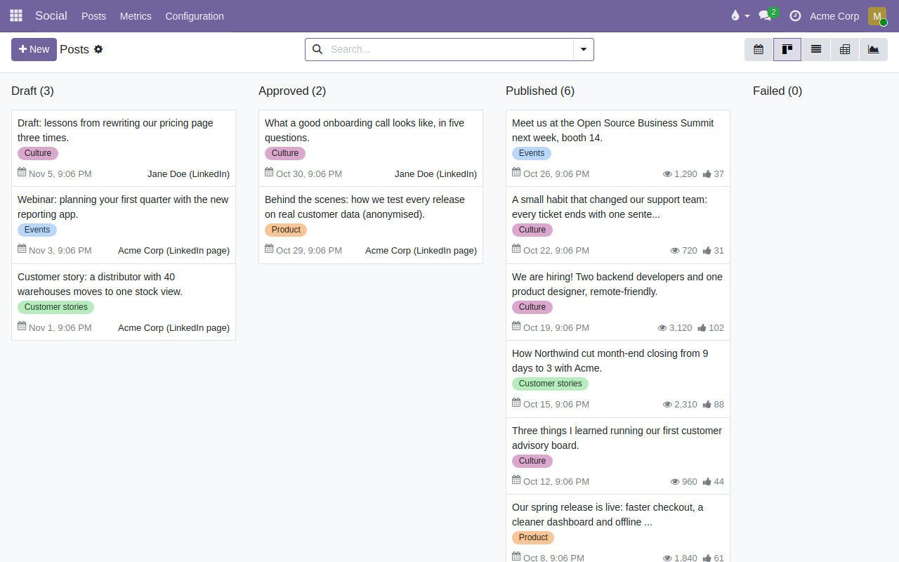

Metrics for every post


Impressions, reach, reactions, comments and more are collected daily, with a history per post and per account. Use the list, pivot and graph views to compare topics and weeks.
A content calendar for the posts of your company pages and of your team, with an approval step before anything goes public and the metrics of every post in one place. Networks plug in as separate modules; install Social Publisher LinkedIn to publish on LinkedIn.

Drafts, approved and published posts on one calendar, coloured by status. Drag a post to another day to reschedule it.


Impressions, reach, reactions, comments and more are collected daily, with a history per post and per account. Use the list, pivot and graph views to compare topics and weeks.
This module stores everything in your database and sends no data anywhere by itself; network modules only talk to the network you connect.